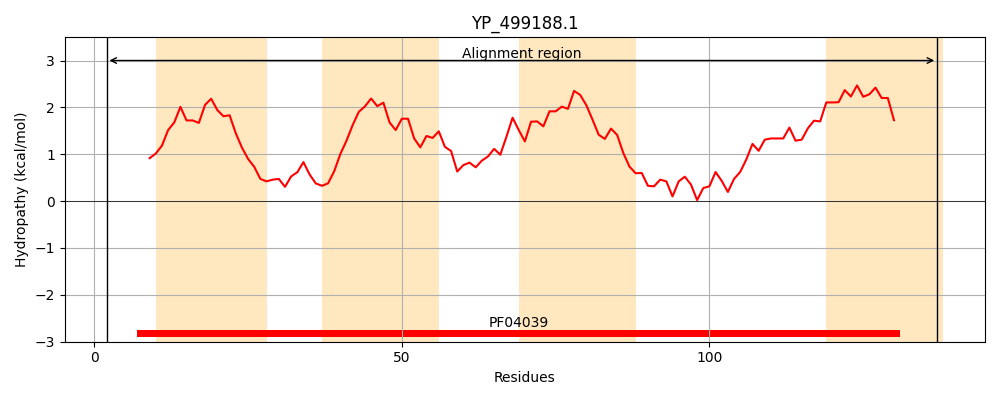
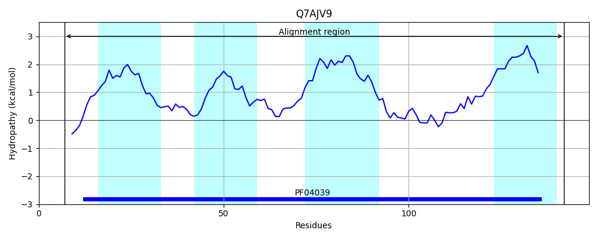
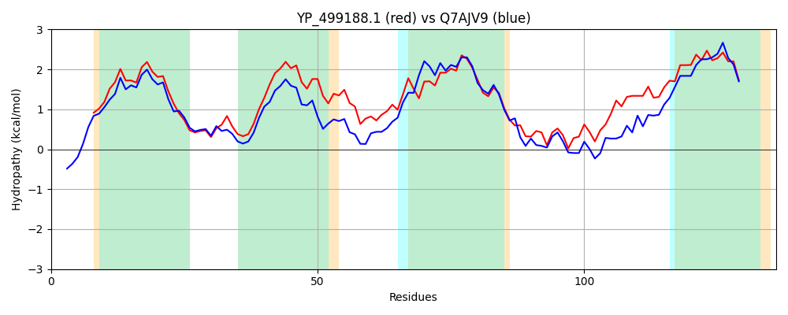

Hit Accession: Q7AJV9
Hit TCID: 2.A.63.1.2
Hit Description: gnl|BL_ORD_ID|15381 gnl|TC-DB|Q7AJV9|2.A.63.1.2 Na+/H+ antiporter OS=Bacillus halodurans GN=BH1318 PE=4 SV=1
Mach Len: 136
e:0.000000
Query TMS Count : 4
Hit TMS Count: 4
TMS-Overlap Score: 3.600000
Predicted Substrates:CHEBI:9175;sodium(1+), CHEBI:5584;hydron
BLAST Alignment:
Score: 357 , Bit scores: 142 bits, E-value: 2.0e-44, Alignment length: 136, Percentage identity: 48
Query: 2 KENDVVLRTVTKLVVFILLTFGFYVFFAGHNNPGGGFIGGLIFSSAFILMFLAFNVEEVLESLPIDFRILMIIGALVSSITAIIPMFFGKPFLSQYETTWILPILGQIHVSTITLFELGILFSVVGVIVTVMLSLS 137
K N+V+L TVT++V FI+L+F Y+FFAGHN+PGGGFIGGL+ +SAF+LM+LAF+++ + ++LP +F L+ IG L++ T + M G PFL+QY + LPILG+ ++T F+LGI V+G+ +T++L+++
Sbjct: 7 KSNEVMLHTVTRIVTFIILSFSVYLFFAGHNDPGGGFIGGLMTASAFLLMYLAFDMDSMKKALPFNFTALIAIGLLLAIFTGVSSMLAGDPFLTQYFRYFQLPILGETELTTALPFDLGIYLVVIGIALTIILTIA 142 | Protein Hydropathy Plots: |
|---|
|  |  |
Pairwise Alignment-Hydropathy Plot:
|
|---|
|  |